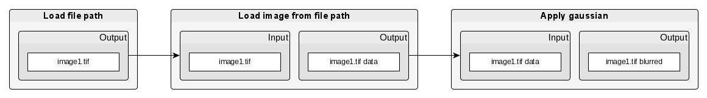
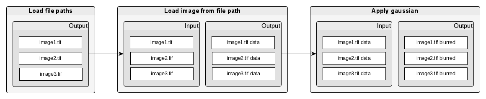
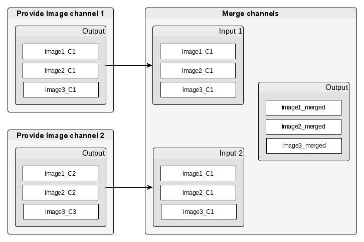
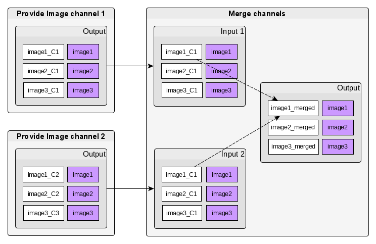
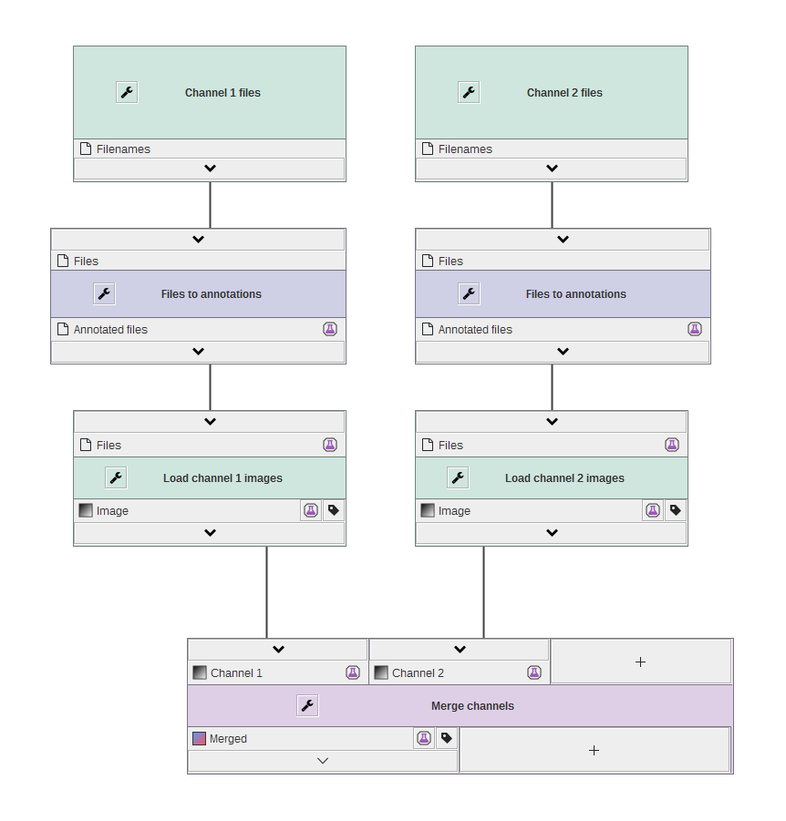

Batch pipelines
JIPipe was designed to always process data in batches, meaning that algorithms always work on multiple data sets at once. This greatly reduces the required work to upscale a processing pipeline from one or few to a large amount of data sets.
We will use this pipeline as example:
In the pipeline, a file is provided as input. Then the file is loaded as image. Finally, the image is processed with a gaussian filter.
A possible implementation of such a pipeline consists of three algorithms, one for each processing step. An algorithm consumes input and produces output. The exception is the algorithm that loads a user-defined file path into the pipeline.

JIPipe extends on this concept by allowing input and output slots contain multiple data sets at once. And depending on the algorithm, it either processes each data set individually, or splits, merges, or transforms the list of input data.

Handling multiple inputs
There might be algorithms that require multiple inputs:
The Merge channels algorithm merges the two image channels into one image with two
channels. If each data slot only contains one entry, finding image channels
that belong to the same data set is trivial.
For list-based data slots, like in JIPipe, it is not trivial to find images that
should be merged. For example, image1_C1 and image1_C2 should be merged to image1_merged:

Data annotations
JIPipe solves this issue by allowing to annotate each data entry (shown as purple entries). Those annotations are in this case automatically extracted and used to group input data. There also can be algorithms that use the annotation information to for example filter or sort data.

There are predefined algorithms located within the Annotate menu that
for example create annotations based on filenames. JIPipe supports an unlimited amount of annotations that can be attached to data.
Following JIPipe pipeline provides an example of making use of annotations to allow multiple inputs:
